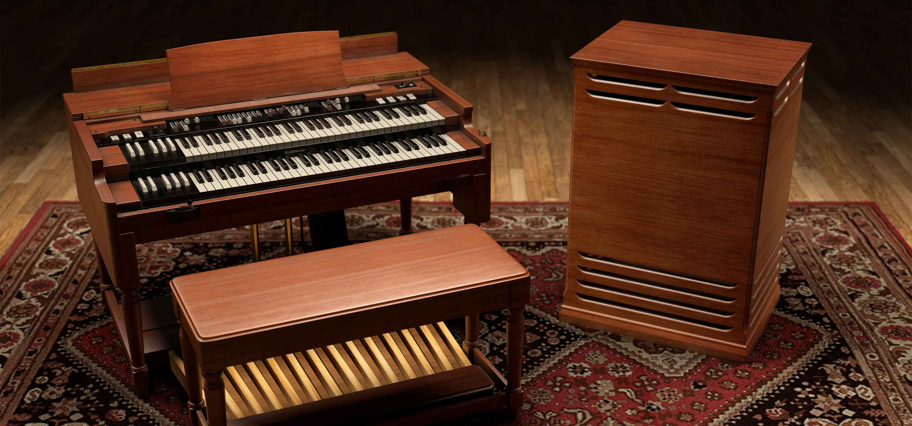

Instrumentos de Teclado

Piano
Marca: Yamaha
Modelo: Serie SX
Precio: $1,500
El piano es un instrumento de teclado clásico utilizado en una amplia variedad de géneros musicales.
Es conocido por su sonido rico y versatilidad.

Órgano
Marca: Hammond
Modelo: B3
Precio: $2,200
El órgano es un instrumento de teclado utilizado en géneros como el rock y el jazz.
Es conocido por su sonido distintivo y su papel en la música popular.